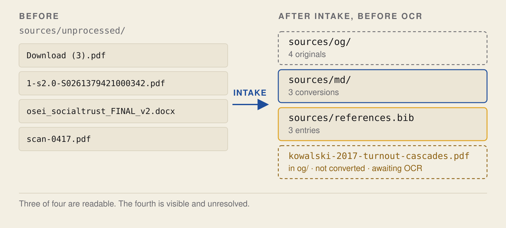

What this demonstrates
Here, you have 4 files. Two of them are PDFs, named by your browser and the publisher. The other two are a Word document and a scan of a page. You ask an agent to identify them, file them away, and convert them. You then check the converted files. At the end of this, you have 3 new .md files in your library, and keys in your bibliography to point to them. You can’t convert the scan, so that’s left as it is. One of the PDFs has a table, and the conversion messes that up, and nothing tells you about it. Finally, you ask the agent to audit another project, which is messier. Then you close the session, and start a new one.
Note: the sources and authors are fake, but the conversion issues are real. This is real output from a run, but you might see slightly different output from a run with more recent versions of the conversion programs.
For the rationale for this, and why it is different from a Karpathy-style LLM wiki (and Kenny’s version of that), see the companion post on Pixels & Patterns.
| You need | You do | You end up inspecting |
|---|---|---|
Claude Code and the skills (Getting started); Python 3; Java 11 or newer; poppler-utils (without it the scan check is silently skipped); Node.js or pandoc for the Word file; for step 6, git with your name and email set and the GitHub CLI signed in |
Scaffold a project, file four sources, convert them, audit a second project, close the session and resume it | Three conversions, one refused scan, one damaged table, four findings about another project’s sources, a handoff checked against the commit history |
1. Get the files
cd ~ && git clone https://github.com/scdenney/ai-for-research.git
mkdir -p ~/kb-demo && cd ~/kb-demo
claudeStart with an empty folder, not the clone. The four files you’ll need are in the inbox folder of the repository you cloned, at ~/ai-for-research/demos/knowledge-base/inbox/. Any lines starting with / are for typing into the Claude Code interface, while all other lines can be run in your shell, either in a new window in ~/kb-demo, or in the Claude Code interface with a ! prepended.
NOTE: the agent will send what it reads to your model provider (what Claude Code sends). This doesn’t matter for this example as the sources are made up, but for your own use, be sure to review your model provider’s and institution’s terms of service before sending confidential information to an agent.
2. Create the project
/oss:research-repo .This skill sets up a source library with a specific folder structure and workflow. It creates a sources/ directory with og/ for original files (gitignored, for size and copyright), md/ for converted files (tracked in git), and unprocessed/ for new files awaiting processing. Each source must have a corresponding entry in sources/references.bib, created during intake. The agent works at the markdown layer, and nothing downstream reads the PDFs, while originals serve as ground truth for verification. Bibliography keys must match their corresponding files by author and year to enable checking.
Additionally, this skill puts the folder under git version control, creates a script for converting files, creates a local command for /process-source, and creates a CLAUDE.md file and links to it in AGENTS.md.
The skill also encodes conventions for working with the source library: use the .md versions for searching the source library, refer to the original if in doubt, and only cite sources from the references.bib file. It’s an error to cite a key that doesn’t correspond to a filed source, since that citation can’t be checked.

3. File the four sources
cp ~/ai-for-research/demos/knowledge-base/inbox/* sources/unprocessed//process-sourceIf Claude Code doesn’t recognize this command, restart claude in this folder. When running /process-source, Claude should process the files one at a time without asking.
| Step | Who | What it produces |
|---|---|---|
| Drop | You | the file sits in sources/unprocessed/ |
| Identify | Agent identifies, you check | author, year, title, venue |
| Rename | Agent | sources/og/author-year-slug.pdf |
| Convert | Tool runs, you check | sources/md/author-year-slug.md |
| Register | Agent | an entry in sources/references.bib |
It won’t convert anything until it has identified the files and renamed them into og/. Double check the author/year it chose for the citation key.


4. Check what the conversion did
Try running the converter again and it’ll say it didn’t convert anything, but complain about the scan again:
./scripts/convert-sources.sh NEEDS OCR (image-only): kowalski-2017-turnout-cascades.pdf
Converted 0 file(s), 1 need OCR. Markdown in $PROJECT/sources/md/There’s nothing it can convert, because that scan isn’t a PDF with a text layer – it’s just an image. (It arrived as scan-0417.pdf and was renamed to kowalski-2017-turnout-cascades.pdf.) The script uses the OpenDataLoader PDF extractor (and anydoc for Office files, or pandoc if node isn’t installed), which just extract the text layer. It can’t do optical character recognition to turn images into text. (In fact the script specifically skips PDFs that don’t have at least some ~300 chars of text per page, since otherwise it will produce a few kb of nonsense that may look like it converted the source. It’s a rough test, since some digital PDFs have very little text.) That’s a separate skill: /oss:vlm-ocr. Until then, it’ll keep showing up as an unconverted scan.
The bigger problem is that if you go to the bottom of page 1 of the Ferreira and Nair PDF in sources/og/, you see a table:
| Outcome | Estimate | 95% interval |
|---|---|---|
| Turnout (percentage points) | 11.2 | 8.4 to 14.0 |
| Knowledge index (standard deviations) | 0.01 | −0.06 to 0.08 |
But in sources/md/ferreira-nair-2021-compulsory-voting.md, the corresponding text is:
### 3. Results Outcome Estimate 95% interval
Turnout (percentage points) 11.2 8.4 to 14.0 Knowledge index (standard deviations) 0.01 −0.06 to 0.08The table structure isn’t preserved. A human or agent reading this would have some work to do to figure out which interval goes with which outcome, and nothing reports it. The surrounding text is extracted just fine and searchable:
$ grep -n "does not appear to teach" sources/md/*.md
sources/md/ferreira-nair-2021-compulsory-voting.md:36:Whatever compulsory voting does, it does not appear to teach.Now look at the entry registration wrote:
@article{ferreira-nair2021,
author = {Ferreira, Tom\'{a}s and Nair, Priya},
title = {Does Compulsory Voting Make Better Citizens?},
...
}The key (ferreira-nair2021) matches a file in sources/md/ by author and year (sources/md/ferreira-nair-2021-compulsory-voting.md), which was converted from the PDF with the same name in sources/og/. A check of whether that source supports a claim follows that chain.
If any of the sources had figures, the script would extract them to a <source>_images/ folder and link to them from the .md file using a relative path. If that happens, commit those images when you commit converted sources. But none of the 4 sources have figures.
5. Audit a project that already exists
Often, you won’t start a new project from scratch, but want to use this skill on an existing project. To that end, you can just point the skill to a folder like so:
/oss:research-repo ~/ai-for-research/demos/knowledge-base/messy-projectHere, say no when it asks you to complete the project, because otherwise it writes into your clone. Now the skill finds several issues with the project:
- First, it finds two files in the
og/folder for which no converted version inmd/exists, namelyPaper1.pdfandferreira nair FINAL (2).pdf. - These two files also have bad names, because they don’t follow the
author-year-slugscheme. As a consequence, nobody can find them by their citation key. - Furthermore, the skill finds a file called
lindqvist-2019-civic-education-turnout.mdthat people can search but cannot cite, because there is no corresponding entry in the bibliography. - Finally, there is one entry in the bibliography, namely
osei2020, for which there is no corresponding source file. You should either add the source or move the entry tomissing.bib, together with an explanation of why the source is missing.
This last issue is essentially the reverse of the previous one. The skill also notes that the project does not yet have a pipeline, namely, a .gitignore file, a conversion script, a drop zone, and a sources/README.md.
6. Close the session, open the next one
Any agent you start on this project tomorrow will be amnesiac. When you want to stop a session, run
/oss:finishedThat will get the repo status, read the most recent commits and diff, and write it all to the project’s handoff and log. It will classify things as either verified, unverified, half done, or decided but not built. It does not make a commit, because you may want to read what it says before committing. (For this run, an honest entry lists three conversions, the scan waiting for OCR, and the damaged table as a known problem.)
Then commit and push to a new GitHub repo (make it a private repo, because the text is still copyrighted even though you converted it):
git add -A
git status --short # no line should start with sources/og/
git commit -m "File three sources; flag the scan and the damaged table"
gh repo create kb-demo --private --source=. --pushIf this isn’t the first time you’re doing this, you can just run git push. sources/og/ and logs/ are gitignored, so back up the originals separately.
When you start up a new agent session, start by running
/oss:sitrepThis reads CLAUDE.md, the handoff, and the log, and checks them against the repository (are you on the right branch, have there been recent commits, are there uncommitted changes, have you diverged from the GitHub branch you’re working on, is the handoff referring to a commit that doesn’t exist in this repo, etc). If something is wrong, it’ll say so in the sitrep.
7. What the library makes possible
| Part of the flow | Skill | What it does |
|---|---|---|
| Knowledge base | research-repo |
Preserve and connect the evidence |
| Source identity | citation-check |
Resolve citations and bibliographic records |
| Claim support | fact-check |
Compare manuscript claims with filed sources |
| Paper and package | paper-review-lite, replication-package |
Review the paper and audit the replication package |
The only command that requires the library is fact-check. If any of the original files have not been converted yet, or if less than two thirds of the works referenced in the citation file have corresponding .md files in the library directory, fact-check will not run. citation-check reads the manuscript and the bibliography, and paper-review-lite reads whatever is provided to it. The replication-package command does not read the library at all.
These commands check the verifiability of the work, but not the validity of a conclusion.
8. Check it yourself
- Create a mismatch between the author and year in a filename and its key by renaming the file, then run
/oss:research-repo .again. - Add a source without adding it to the bibliography.
- Open a conversion and its original side-by-side to check that the tables match.
- OCR the scan, save it as
sources/md/kowalski-2017-turnout-cascades.md, run/oss:research-repo .again, and make sure the scan is no longer listed as unconverted. - Run
/oss:finished, then modify one of the files without committing. Start a new session and run/oss:sitrep. It should show the uncommitted change.
The answer key lists all the problems planted in the exercise. All of the commands are in prompts/run.md.
Next: reference and source-claim checking
The claim check needs a manuscript as well as a library, and this demo ships no manuscript. That one supplies both.
Sources
- Karpathy, A. (2026). LLM Wiki. GitHub Gist, 4 April.
- Kenny, C. T. (2026). Agentic AI for Political Science Research. Skills workshop, Center for the Study of Democratic Politics, Princeton University, 10 September. Code: csdp-llm-wiki.
- Conversion uses OpenDataLoader PDF for PDFs and anydoc for Office formats.